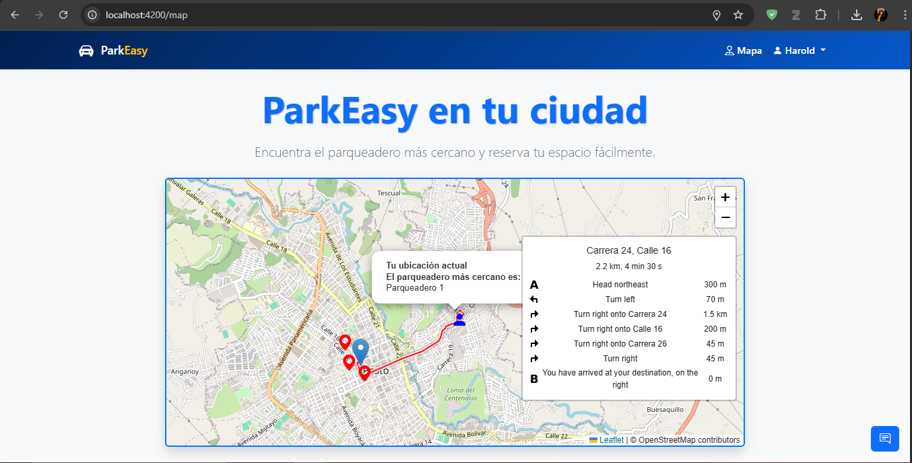

ParkEasy
Aplicación web innovadora para la búsqueda y reserva de espacios de estacionamiento en tiempo real. Integra mapas interactivos y opciones de pago en línea para facilitar la experiencia del usuario.
Tecnologías: Angular, Node.js, PostgreSQL, Bootstrap, APIs de Google Maps, Stripe